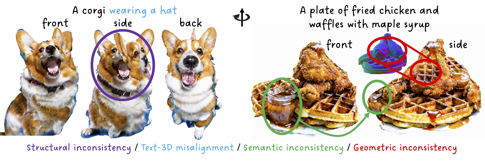
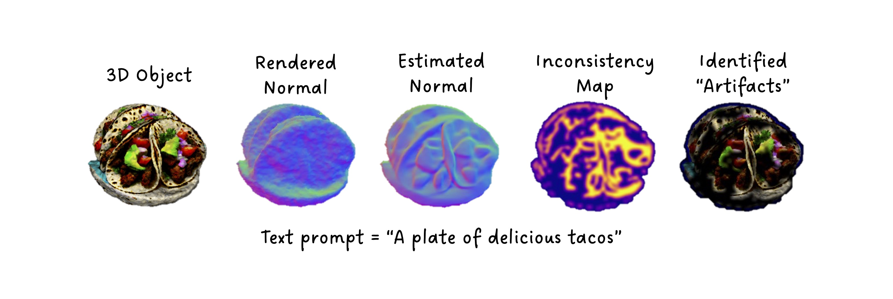
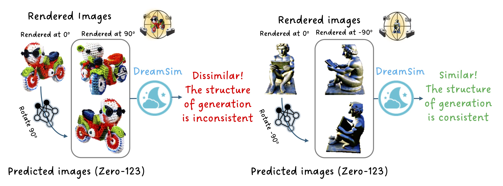

Abstract
Despite the unprecedented progress in the field of 3D generation, current systems still often fail to produce high-quality 3D assets that are visually appealing and geometrically and semantically consistent across multiple viewpoints. To effectively assess the quality of the generated 3D data, there is a need for a reliable 3D evaluation tool. Unfortunately, existing 3D evaluation metrics often overlook the geometric quality of generated assets or merely rely on black-box multimodal large language models for coarse assessment. In this paper, we introduce Eval3D, a fine-grained, interpretable evaluation tool that can faithfully evaluate the quality of generated 3D assets based on various distinct yet complementary criteria. Our key observation is that many desired properties of 3D generation, such as semantic and geometric consistency, can be effectively captured by measuring the consistency among various foundation models and tools. We thus leverage a diverse set of models and tools as probes to evaluate the inconsistency of generated 3D assets across different aspects. Compared to prior work, Eval3D provides pixel-wise measurement, enables accurate 3D spatial feedback, and aligns more closely with human judgments. We comprehensively evaluate existing 3D generation models using Eval3D and highlight the limitations and challenges of current models.
Challenges of 3D Generation
- Structural inconsistency: lack of globally-coherent 3D shape;
- Text-3D misalignment: failure to meet the requirements of the input text-prompt;
- Semantic i`nconsistency: content change and incoherent semantics;
- Geometric inconsistency: misaligned geometry and texture.
Overview of Eval3D
Geometric Inconsistency
Structural Consistency
Semantic Inconsistency
As we toggle the texture on and off, pay close attention to how the hand appears in the geometry. When the texture is off, it looks as if the dog is holding the phone with two hands. However, when the texture is turned on, it seems that only one hand is holding the phone while the other rests on the ground. See how Eval3D Semantic Consistency beautifully highlights this observation above.

As we move around the camera to focus on different viewpoints of the geometry, the Jannus issue on the dog nose becomes evident. Eval3D detects it again, see the dog nose highlighted in cyan in the figure above!

Notice the abrupt geometric patterns on the dog’s back, which even create the illusion of a strange arm. Eval3D Semantic Consistency, being 3D-aware, detects this effectively! The inconsistent or abrupt geometry causes the projections of 3D points onto the rendered image's DINO featuresto become noisy, resulting in a high standard deviation in the aggregated DINO features for these 3D points.
Will Eval3D Semantic Consistency be high for GT Objects?

Check the high consistency of DINO features for Ground-Truth (GT) Objaverse objects.